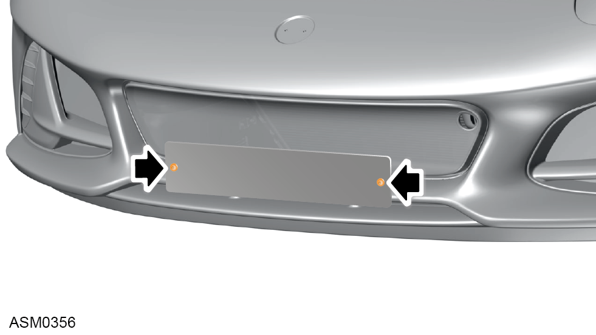
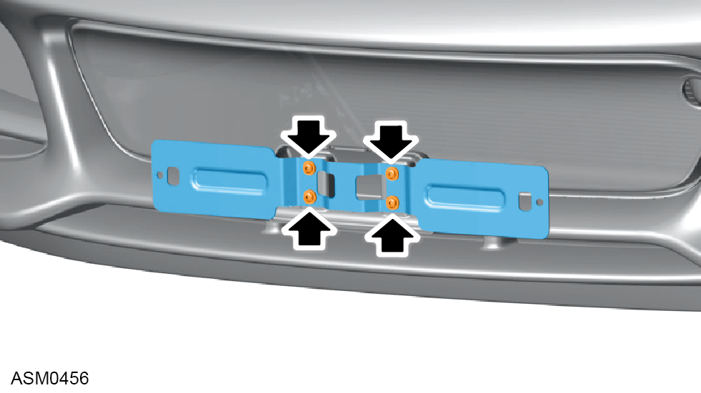
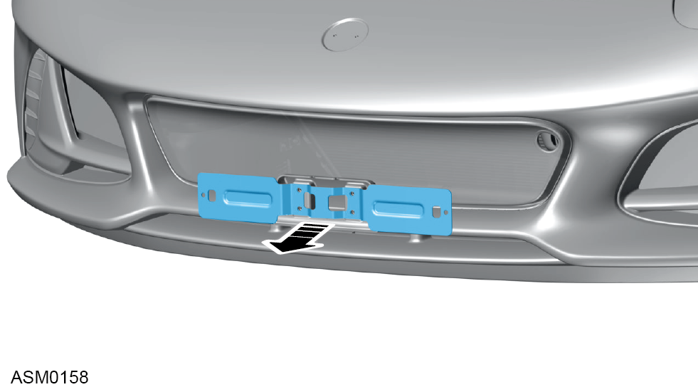
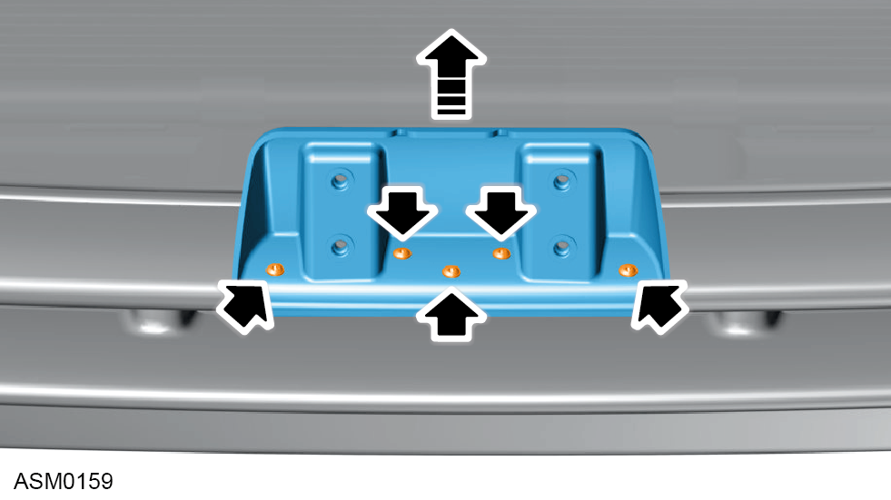
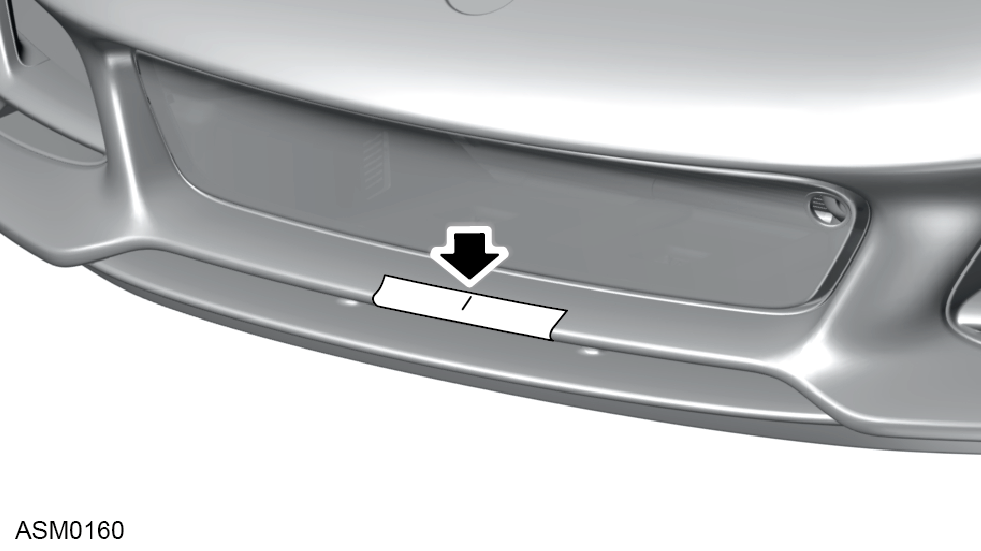
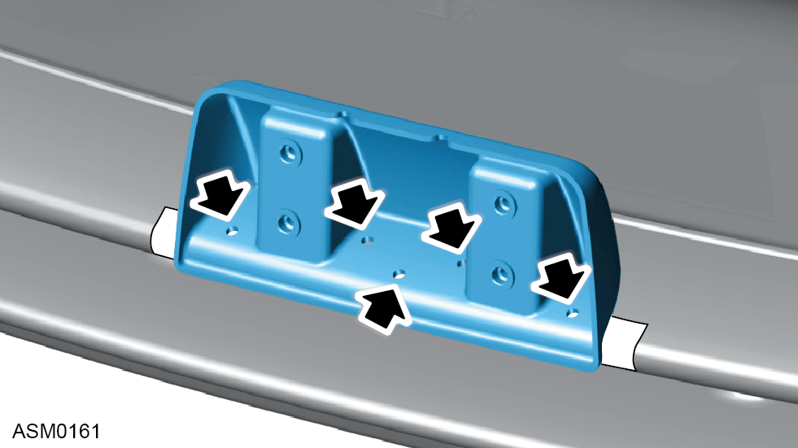
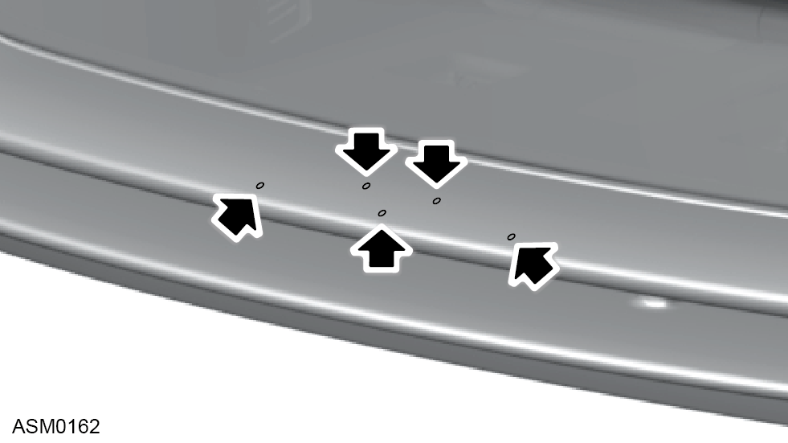

Licence Plate Plinth - Front
Print
Operation Code: 12.07.01-02
Removal

- Remove screws (x2) securing licence plate to licence plate bracket and remove licence plate.

- Remove M6x16 bolts with washers (x4) securing licence plate bracket to plinth.

- Remove licence plate bracket from vehicle.

- Remove screws (x5) securing plinth to bumper.
- Remove plinth from vehicle.
Installation
- Installation is the reverse of removal procedure except for the following:
- If you install plinth to a new bumper do the following procedure:

- With masking tape to protect front bumper, measure and mark the centre of the front bumper as shown.
- Position plinth on bumper so centre of plinth aligns with centre mark of bumper and profile of plinth engages with edge of bumper.

- Use the plinth as a template to mark the fixing hole positions on the bumper.

- Remove plinth from bumper and pre-drill fixing hole positions.
- Continue to install plinth to bumper as reverse of removal procedure.